Mathematics¶
Linear Algebra¶
Tensor Product Space¶
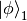 and 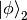 are elements of Hilbert space  and
and  . Tensor Product of and is denoted as 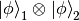. This operation is linear and distributive.
. Tensor Product of and is denoted as 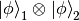. This operation is linear and distributive.
Tensor product space 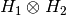 is composed of all the linear combinations of all possible tensor products of elements in and .
Operators Applied to Tensor Product¶
Two operators 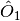 and  works on and respectively applied to tensor product
works on and respectively applied to tensor product
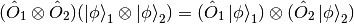
Differential Geometry¶
Metric¶
Definitions¶
Denote the basis in use as  , then the metric can be written as
, then the metric can be written as
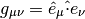
if the basis satisfies
Inversed metric
How to calculate the metric¶
Let’s check the definition of metric again.
If we choose a basis , then a vector (at one certain point) in this coordinate system is
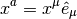
Then we can construct the expression of metric of this point under this coordinate system,

For example, in spherical coordinate system,
(1)
Now we have to find the basis under spherical coordinate system. Assume the basis is  . Choose some scale factors
. Choose some scale factors  . Then the basis is
. Then the basis is

etc. Then collect the terms in formula (1) is we get  , this is incomplete. So we check the derivative.
, this is incomplete. So we check the derivative.
![\mathrm d\vec x = \hat e_x (\mathrm dr \sin\theta\cos\phi+r\cos\theta\cos\phi\mathrm d\theta-r\sin\theta\sin\phi\mathrm d\phi)
\hat e_y (\mathrm dr\sin\theta\sin\phi+r\cos\theta\sin\phi\mathrm d\theta+r\sin\theta\cos\phi\mathrm d\phi)
\hat e_z (\mathrm dr\cos\theta-r\sin\theta\mathrm d\theta)
= \mathrm dr(\hat e_x\sin\theta\cos\phi +\hat e_y \sin\theta\sin\phi -\hat e_z \cos\theta)
\mathrm d\theta (\hat e_x\cos\theta\cos\phi +\hat e_y \cos\theta\sin\phi - \hat e_z \sin\theta)r
\mathrm d\phi (-\hat e_x\sin\phi +\hat e_y \cos\phi)r\sin\theta
=\hat e_r\mathrm dr+\hat e_\theta r\mathrm d\theta +\hat e_\phi r\sin\theta\mathrm d \phi](_images/math/ec03c5424d347b56e1739555f6594155bb3c4b98.png)
Once we reach here, the component ( ) of the point under the spherical coordinates system basis () at this point are clear, i.e.,
) of the point under the spherical coordinates system basis () at this point are clear, i.e.,
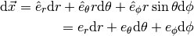
In this way, the metric tensor for spherical coordinates is
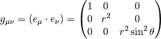
Connection¶
First class connection can be calculated

Second class connection isfootnote{Kevin E. Cahill}
![[\mu\nu,\iota]=g_{\iota\mu}\Gamma^\mu_{\phantom{\mu}\nu\lambda}](_images/math/cc2a19338326e06ffc00170a19c64f74c11b8dd8.png)
Gradient, Curl, Divergence, etc¶
Gradient¶


Divergence¶
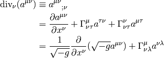
For an anti-symmetric tensor
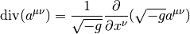
Annotation Using the relation  ,
,  is the algebraic complement, we can prove the following two equalities.
is the algebraic complement, we can prove the following two equalities.


In some simple case, all the three kind of operation can be demonstrated by different applications of the del operator, which  .
.
- Gradient,
 , in which
, in which  is a scalar.
is a scalar. - Divergence,

- Curl,

- Laplacian,


 is the adjugate matrix of
is the adjugate matrix of  .
.